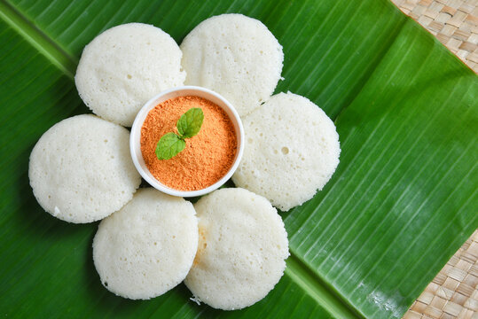
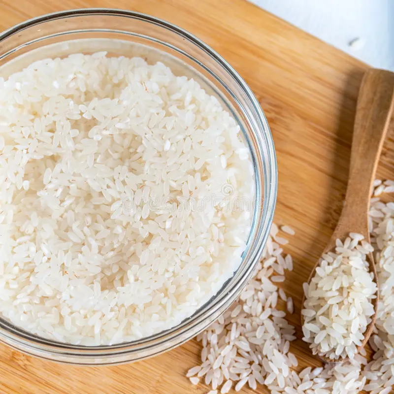
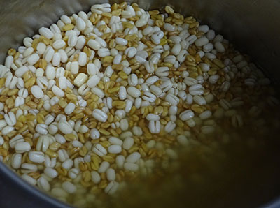
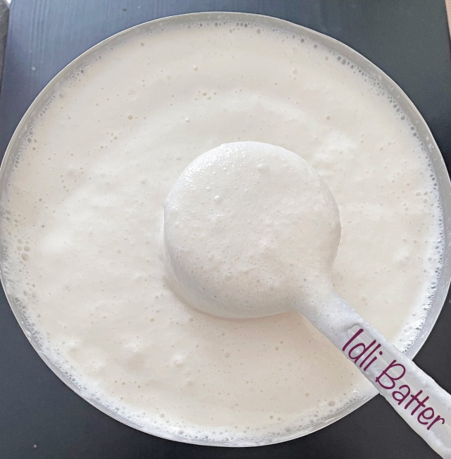

A classic South Indian breakfast dish made from fermented rice and lentils.
An Idli is a soft, fluffy, and steamed Healthy South Indian Breakfast generally made from Urad dal and Idli Rava or Rice. Preparing this Idli is very simple. All it takes to make this delicious and spongy idli is to just soak the Rice,Urad Dal and fenugreek seeds for a few (around 4-5 hours)hours and grind them to a thick consistency. And then add salt to the batter and let it ferment for 8-12 hours. The fermentation process is very important
Ingredients:
Instructions:


